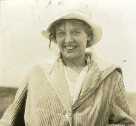
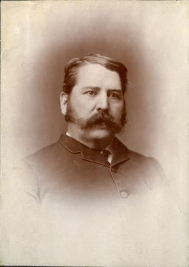
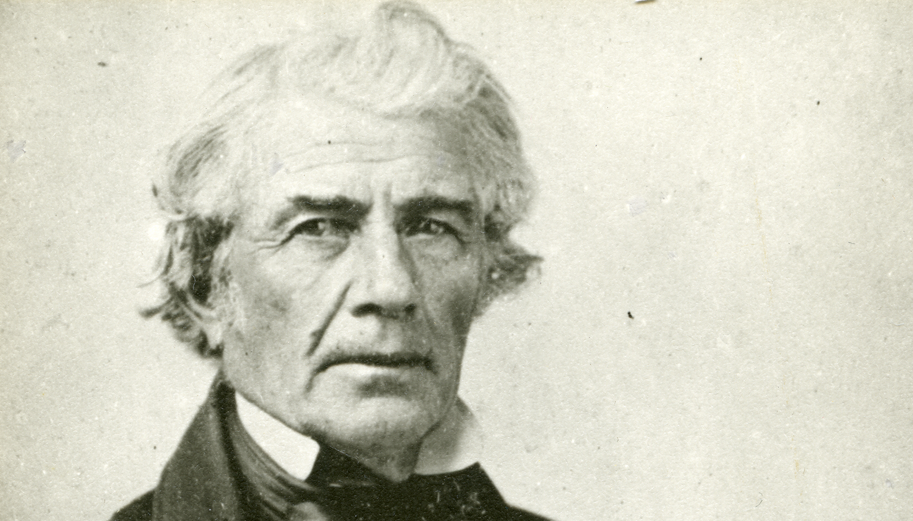

Buckman-Crook

Hilda Buckman-Crook was an artist, an environmentalist, a poet, and a pioneer. Born in England in 1893, she was the eighth and youngest child. Hilda's penchant for art began at an early age, leading her to study art at Oxford.
Hilda and her brother George moved to Canada in 1914 to live with siblings on a homestead near Rocky Mountain House. These were the happiest years of her life, spending her weekends exploring the bush country, fishing, hiking, and painting. Hilda also started work on a book using text and paintings to document wildflowers, berries, and edible plants in the region.
Cottingham Family

Hilda Buckman-Crook was an artist, an environmentalist, a poet, and a pioneer. Born in England in 1893, she was the eighth and youngest child. Hilda's penchant for art began at an early age, leading her to study art at Oxford.
Hilda and her brother George moved to Canada in 1914 to live with siblings on a homestead near Rocky Mountain House. These were the happiest years of her life, spending her weekends exploring the bush country, fishing, hiking, and painting. Hilda also started work on a book using text and paintings to document wildflowers, berries, and edible plants in the region.
Carscallen Family

Isaac B. Carscallen, descended from United Empire Loyalists, farmed in the Napanee area his entire life. He had at least two wives and 10 children. His son Isaac Newton Carscallen operated a hardware store with two of his brothers near Dresden, Ontario. Isaac N., son of Isaac B., married in 1861 and had five children.
Stanley Newton Carscallen came to Red Deer in 1903 with hopes of opening a hardware store like his father. He and Edward Michener soon established the real estate and insurance firm of Michener and Carscallen. Stanley married Mary Belle Bond in 1904. The first of three children, Eula, arrived in 1905, son Alan in 1907, and daughter Beth in 1910.
Stanley was an alderman from 1910–1913 and mayor of Red Deer in 1914. However, the real estate boom collapsed during the First World War, and the firm of Michener and Carscallen went into bankruptcy. The Carscallens were forced to sell their family home in Red Deer in 1917. Stanley worked as an insurance agent in Medicine Hat and later in Calgary.
In 1933, the family moved to their cottage at Sylvan Lake, where Stanley started the real estate and insurance firm Carscallen Agencies. Stanley Carscallen died in 1943 and Mary in 1961. They are both buried in Red Deer.
More information on the Carscallen family and additional photographs are contained in MG 473 Carscallen, Lapp family fonds in the Red Deer Archives.